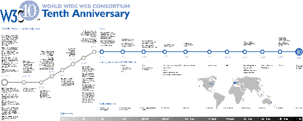

WC3
The History of the WC3
The WC3 was founded by Tim Berners-Lee, the creator of the World Wide Web and HTML markup language, in October 1994. It is currently led by Berners-Lee and Dr. Jefferey Jaffe, the WC3 CEO. The standards projected by the WC3 are set by WC3 members and other technical experts.

Timeline of the WC3